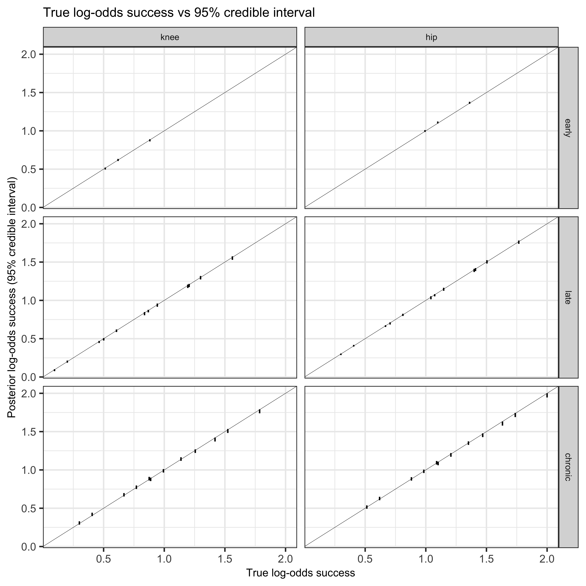

Model implementation
Introduction
Given the design, the simplest implementation I could think of split the data into silo-specific chunks, mimicking the formulation in the model specification earlier. Nevertheless, the model is cumbersome.
data {
// early
int N_e;
array[N_e] int e_su;
array[N_e] int e_y;
array[N_e] int e_n;
vector[N_e] e_ec; // membership
vector[N_e] e_ecp; // non-membership, ie 1 - e_ec
array[N_e] int e_c;
int N_l;
array[N_l] int l_su;
array[N_l] int l_y;
array[N_l] int l_n;
vector[N_l] l_ec;
vector[N_l] l_ecp; // 1 - l_ec
array[N_l] int l_c;
vector[N_l] l_ea;
vector[N_l] l_eap;
array[N_l] int l_a;
vector[N_l] l_eb1;
vector[N_l] l_eb2;
vector[N_l] l_ebp;
array[N_l] int l_b;
int N_c;
array[N_c] int c_su;
array[N_c] int c_y;
array[N_c] int c_n;
vector[N_c] c_ec;
vector[N_c] c_ecp; // 1 - c_ec
array[N_c] int c_c;
vector[N_c] c_ea;
vector[N_c] c_eap;
array[N_c] int c_a;
vector[N_c] c_eb1;
vector[N_c] c_eb2;
vector[N_c] c_ebp;
array[N_c] int c_b;
}
transformed data {
int N = N_e + N_l + N_c;
}
parameters {
vector[6] alpha;
real gamma_b;
real gamma_c;
real b_a_l_raw;
real b_b1_l_raw;
real b_b2_l_raw;
real b_a_c_raw;
real b_b1_c_raw;
real b_b2_c_raw;
real b_c_raw;
}
transformed parameters{
// Include non-randomised items in parameter vector but set to zero
// see b_c[3] below. Gives a simpler way to build up model without index
// overrun or conditionals for building linear predictor.
vector[2] b_a_l; // dair vs revision (late silo)
vector[3] b_b1_l; // note length - dair vs revision (late silo, recvd one-stage)
vector[3] b_b2_l; // note length - dair vs revision (late silo, recvd two-stage)
vector[2] b_a_c; // dair vs revision (chronic silo)
vector[2] b_b1_c; // dair vs revision (chronic silo, recvd one-stage)
vector[2] b_b2_c; // dair vs revision (chronic silo, recvd two-stage)
vector[3] b_c; // note length
b_a_l[1] = 0.0;
b_a_l[2] = b_a_l_raw;
b_b1_l[1] = 0.0;
b_b1_l[2] = b_b1_l_raw;
b_b1_l[3] = 0.0;
b_b2_l[1] = 0.0;
b_b2_l[2] = b_b2_l_raw;
b_b2_l[3] = 0.0;
b_a_c[1] = 0.0;
b_a_c[2] = b_a_c_raw;
b_b1_c[1] = 0.0;
b_b1_c[2] = b_b1_c_raw;
b_b2_c[1] = 0.0;
b_b2_c[2] = b_b2_c_raw;
b_c[1] = 0.0;
b_c[2] = b_c_raw;
// handles other, but this can be ignored in post-processing
b_c[3] = 0.0;
}
model{
target += normal_lpdf(alpha | 0, 1.5);
target += std_normal_lpdf(gamma_b);
target += std_normal_lpdf(gamma_c);
// all silos
target += std_normal_lpdf(b_c_raw);
// late silo
target += std_normal_lpdf(b_a_l_raw);
target += std_normal_lpdf(b_b1_l_raw);
target += std_normal_lpdf(b_b2_l_raw);
// chronic silo
target += std_normal_lpdf(b_a_c_raw);
target += std_normal_lpdf(b_b1_c_raw);
target += std_normal_lpdf(b_b2_c_raw);
// likelihood chunks pertaining to each silo
target += binomial_logit_lpmf(e_y | e_n, alpha[e_su] +
e_ecp * gamma_c +
e_ec .* b_c[e_c]) ;
target += binomial_logit_lpmf(l_y | l_n, alpha[l_su] +
l_ebp * gamma_b +
l_ecp * gamma_c +
l_ea .* b_a_l[l_a] +
l_eb1 .* b_b1_l[l_b] +
l_eb2 .* b_b2_l[l_b] +
l_ec .* b_c[l_c]
) ;
target += binomial_logit_lpmf(c_y | c_n, alpha[c_su] +
c_ebp * gamma_b +
c_ecp * gamma_c +
c_ea .* b_a_c[c_a] +
c_eb1 .* b_b1_c[c_b] +
c_eb2 .* b_b2_c[c_b] +
c_ec .* b_c[c_c]) ;
}
generated quantities{
vector[N_e] eta_e ;
vector[N_l] eta_l ;
vector[N_c] eta_c ;
vector[N] eta;
eta_e = alpha[e_su] + e_ecp * gamma_c + e_ec .* b_c[e_c];
eta_l = alpha[l_su] + l_ebp * gamma_b + l_ecp * gamma_c +
l_ea .* b_a_l[l_a] +
l_eb1 .* b_b1_l[l_b] + l_eb2 .* b_b2_l[l_b] +
l_ec .* b_c[l_c];
eta_c = alpha[c_su] + c_ebp * gamma_b + c_ecp * gamma_c +
c_ea .* b_a_c[c_a] +
c_eb1 .* b_b1_c[c_b] + c_eb2 .* b_b2_c[c_b] +
c_ec .* b_c[c_c];
eta = append_row(eta_e, append_row(eta_l, eta_c));
}Below I create a data set with many more records that we will have available simple in order to see if we can get close to recovering the parameters. I fit the above model and then extract and summarise the posterior.
Code
m2 <- cmdstanr::cmdstan_model("stan/model-sim-02.stan")
set.seed(1)
ll <- get_trial_data(N = 5e4)
d_b <- ll$d_i[, .(y = sum(y), n = .N), keyby = .(silo, joint, su, ea, a, qa, eb, b, ec, c, eta)]
# sapply(d_b, class)
ld <- list(
N_e = d_b[silo == "early", .N],
e_su = d_b[silo == "early", su],
e_y = d_b[silo == "early", y],
e_n = d_b[silo == "early", n],
e_ec = d_b[silo == "early", ec],
e_ecp = d_b[silo == "early", 1-ec],
e_c = d_b[silo == "early", c],
N_l = d_b[silo == "late", .N],
l_su = d_b[silo == "late", su],
l_y = d_b[silo == "late", y],
l_n = d_b[silo == "late", n],
l_ec = d_b[silo == "late", ec],
l_ecp = d_b[silo == "late", 1-ec],
l_c = d_b[silo == "late", c],
l_ea = d_b[silo == "late", ea],
l_eap = d_b[silo == "late", 1-ea],
l_a = d_b[silo == "late", a],
# below a indicates revision and plan indicates one-stage
l_eb1 = d_b[silo == "late", as.integer(a == 2 & qa == 1)],
# below a indicates revision and plan indicates two-stage
l_eb2 = d_b[silo == "late", as.integer(a == 2 & qa == 2)],
l_ebp = d_b[silo == "late", 1-eb],
l_b = d_b[silo == "late", b],
# chronic silo
N_c = d_b[silo == "chronic", .N],
c_su = d_b[silo == "chronic", su],
c_y = d_b[silo == "chronic", y],
c_n = d_b[silo == "chronic", n],
# domain c randomisation/membership
c_ec = d_b[silo == "chronic", ec],
# domain c non-randomisation/non-membership
c_ecp = d_b[silo == "chronic", 1-ec],
# domain c allocation
c_c = d_b[silo == "chronic", c],
# domain a allocation
c_ea = d_b[silo == "chronic", ea],
c_eap = d_b[silo == "chronic", 1-ea],
c_a = d_b[silo == "chronic", a],
# domain b randomisation/membership for one-stage pt
c_eb1 = d_b[silo == "chronic", as.integer(a == 1)],
# domain b randomisation/membership for two-stage pt
c_eb2 = d_b[silo == "chronic", as.integer(a == 2)],
# domain b non-randomisation/non-membership
c_ebp = d_b[silo == "chronic", 1-eb],
c_b = d_b[silo == "chronic", b]
)
f2 <- m2$sample(
ld, iter_warmup = 1000, iter_sampling = 2000,
parallel_chains = 2, chains = 2, refresh = 0, show_exceptions = F,
max_treedepth = 13)Running MCMC with 2 parallel chains...
Chain 2 finished in 5.3 seconds.
Chain 1 finished in 5.6 seconds.
Both chains finished successfully.
Mean chain execution time: 5.4 seconds.
Total execution time: 5.6 seconds.Code
# f2$summary(variables = c("alpha"))
# f2$summary(variables = c("gamma_b"))
# f2$summary(variables = c("gamma_c"))
# f2$summary(variables = c("b_a_l"))
# f2$summary(variables = c("b_a_c"))
# f2$summary(variables = c("b_b1_l"))
# f2$summary(variables = c("b_b2_l"))
# f2$summary(variables = c("b_b1_c"))
# f2$summary(variables = c("b_b2_c"))
# f2$summary(variables = c("b_c"))
post <- data.table(f2$draws(variables = c(
"eta"
), format = "matrix"))
# create index field
post <- melt(post, measure.vars = names(post))
post[, idx := gsub(".*\\[", "", variable)]
post[, idx := gsub("\\]", "", idx)]
post[, idx := as.integer(idx)]
d_fig <- cbind(d_b, post[, .(eta_med = median(value),
eta_q025 = quantile(value, prob = 0.025),
eta_q975 = quantile(value, prob = 0.975)), keyby = idx])Figure 1 shows a comparison between the true log-odds of treatment success with the 95% credible interval obtained from the model. It suggests a fairly strong association between the true and estimated log-odds of treatment success for this particular dataset.
Code
ggplot(d_fig, aes(x = eta, y = eta_med)) +
# geom_point() +
geom_linerange(aes(ymin = eta_q025, ymax = eta_q975)) +
geom_abline(intercept = 0, slope = 1, lwd = 0.1) +
scale_x_continuous("True log-odds success") +
scale_y_continuous("Posterior log-odds success (95% credible interval)") +
facet_grid(silo ~ joint) +
ggtitle("True log-odds success vs 95% credible interval")
